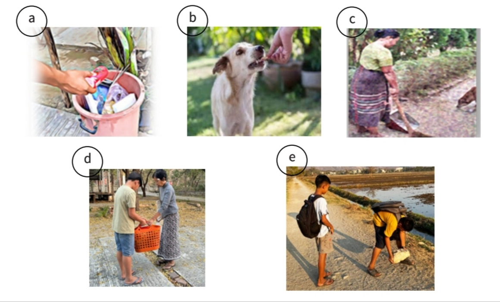

A
Look at the pictures (a–e)
ပုံ (a) မှ (e) အထိ ကြည့်ပြီး ပုံထဲရှိသူများ ဘာလုပ်နေကြသည်ကို ခန့်မှန်းပါ။

ပုံများကိုကြည့်ပြီး ကိုယ်တိုင်အရင်ဖြေကြည့်ပါ။
B
Listen & Arrange
လူနှစ်ဦး၏ စကားပြောဆိုမှုကို နားထောင်ပြီး အောက်ပါလုပ်ရပ်များကို ကြားရသည့်အစဉ်အတိုင်း စီပါ။
C
Complete the Sentences
ထပ်မံနားထောင်ပြီး ဝါကျများကို သင့်လျော်သော စကားလုံးများဖြင့် ဖြည့်စွက်ပါ။
D
My Personal Qualities
မိမိ၏ အကောင်းဆုံးအရည်အသွေးများနှင့် မရှိသေးသော်လည်း ပိုင်ဆိုင်လိုသော အရည်အသွေးများကို မှတ်စုရေးပါ။
🌟 My best qualities
မိမိ၏ အကောင်းဆုံးအရည်အသွေးများ
🌱 Qualities I'd like to have
မိမိ ပိုမိုပိုင်ဆိုင်လိုသော အရည်အသွေးများ
Sample answers
I am kind, honest and responsible.ကျွန်ုပ်သည် ကြင်နာတတ်သူ၊ ရိုးသားသူနှင့် တာဝန်ယူမှုရှိသူဖြစ်သည်။
I would like to be more patient and confident.ကျွန်ုပ်သည် ပိုမိုစိတ်ရှည်ပြီး မိမိကိုယ်ကို ယုံကြည်မှု ပိုရှိချင်သည်။
E
Pair Speaking Practice
နှစ်ယောက်တွဲ၍ အောက်ပါမေးခွန်းများကို အပြန်အလှန် မေးမြန်းဖြေဆိုပါ။